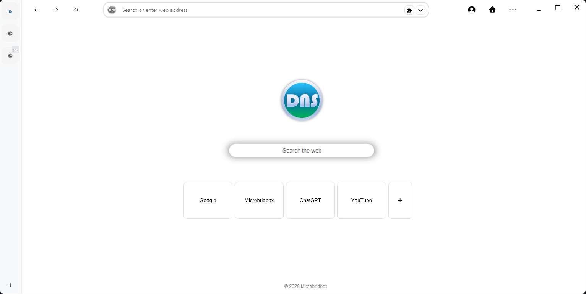
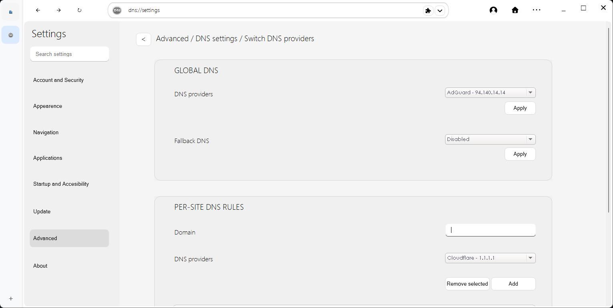
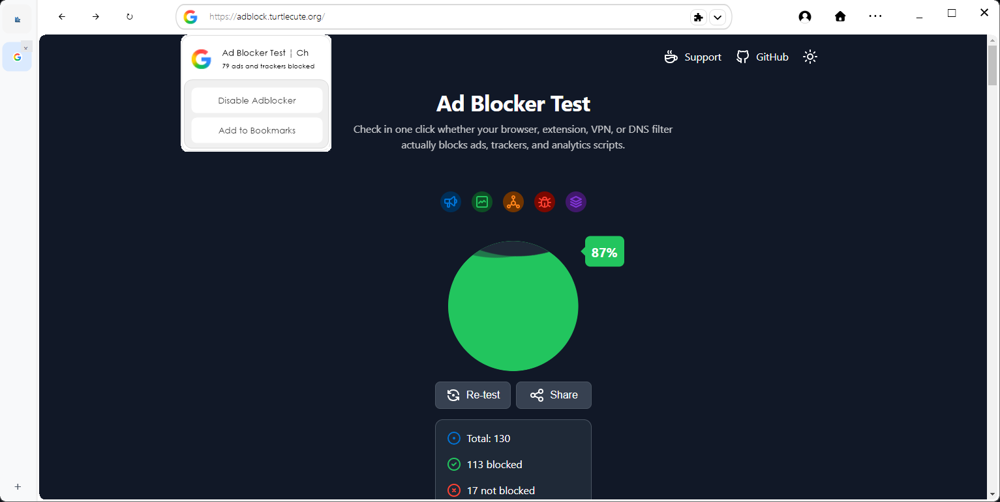
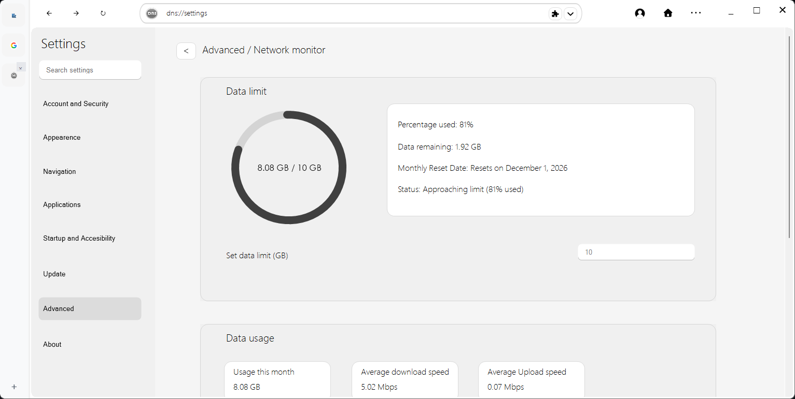
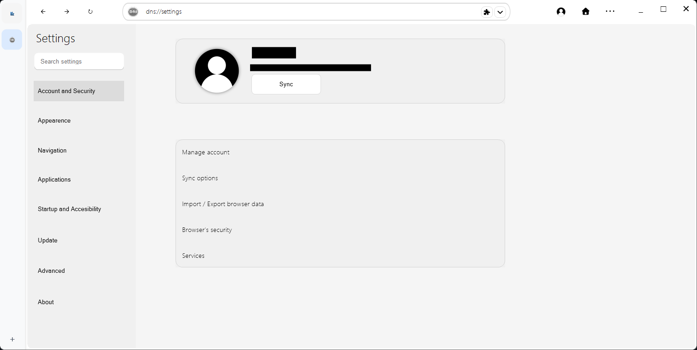

Custom per-site DNS
Configure DNS providers for individual domains, alongside global and fallback DNS settings.
A rebuilt Chromium-based desktop browser focused on a refreshed interface, configurable DNS, built-in ad blocking and practical network tools.
DNS Browser 3.0 is a fresh rebuild of the desktop browser, with a redesigned interface and a stronger focus on network-level controls and everyday usability.

These highlights correspond to the current development screenshots shown below.
Configure DNS providers for individual domains, alongside global and fallback DNS settings.
Use the integrated request-blocking engine and review its results with an ad-block testing page.
Review data usage, a configurable data limit, monthly reset information and transfer-speed details.
A clean start page with search and quick links to frequently used websites.
Centralized settings for account and security, appearance, navigation, applications and advanced options.
A new development cycle focused on a refreshed desktop experience and practical browser controls.
These screenshots are from the DNS Browser 3.0 build and replace the older 2.x visuals previously shown in this section.
Updated start page with the DNS Browser logo, web search and quick-access tiles.

Global DNS, fallback DNS and per-site DNS rules are managed from the advanced DNS settings.

A view of the browser's built-in ad-blocking capability during an ad-block test.

Review data usage, set a data limit and inspect monthly usage and transfer-speed information.

Organized settings categories, including account and security, appearance, navigation and advanced options.
The original gallery contains archived visuals from earlier DNS Browser 2.x releases.